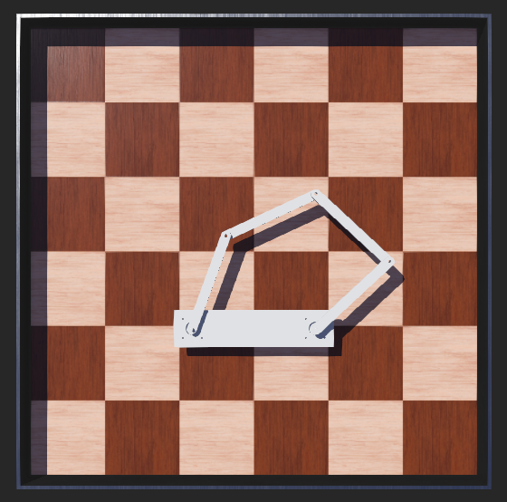
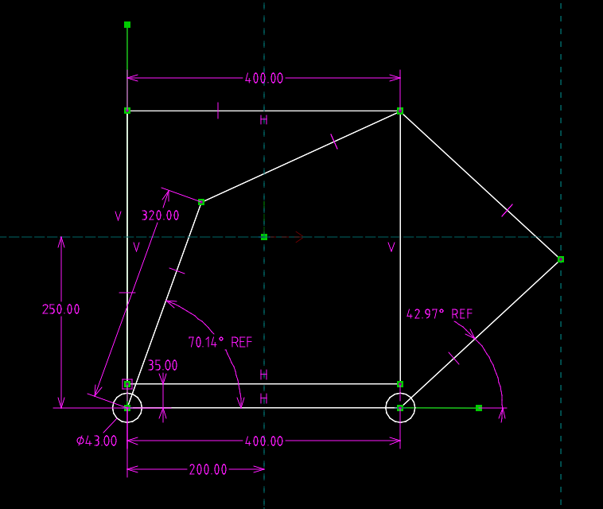

AI_plotter <<
Previous Next >> P_webots
P_onshape

plotter_dimension_design_2.slvs
webots_plotter_sympy.py
webots_verification.py

import cmath
import math
# Solution 3:
def t1_sol3(x, y):
rad = 2.0 * cmath.atan(
(1280.0 * y + cmath.sqrt(
-4000000.0 * x**4
- 3200000.0 * x**3
- 8000000.0 * x**2 * y**2
- 4000000.0 * x**2 * y
+ 178400.0 * x**2
- 3200000.0 * x * y**2
- 1600000.0 * x * y
+ 327360.0 * x
- 4000000.0 * y**4
- 4000000.0 * y**3
- 181600.0 * y**2
+ 409200.0 * y
+ 125911.0
) + 320.0) / (
2000.0 * x**2 + 2080.0 * x + 2000.0 * y**2 + 1000.0 * y + 461.0
)
)
return math.degrees(rad.real)
def t2_sol3(x, y):
rad = 2.0 * cmath.atan(
(1280.0 * y - cmath.sqrt(
-4000000.0 * x**4
+ 3200000.0 * x**3
- 8000000.0 * x**2 * y**2
- 4000000.0 * x**2 * y
+ 178400.0 * x**2
+ 3200000.0 * x * y**2
+ 1600000.0 * x * y
- 327360.0 * x
- 4000000.0 * y**4
- 4000000.0 * y**3
- 181600.0 * y**2
+ 409200.0 * y
+ 125911.0
) + 320.0) / (
2000.0 * x**2 + 480.0 * x + 2000.0 * y**2 + 1000.0 * y - 51.0
)
)
return math.degrees(rad.real)
# 測試
print(t1_sol3(0.2, 0.185), t2_sol3(0.2, 0.185))
利用右上方最遠的繪圖點進行上列 Solution 3 方程式查驗:
plotter_dimension_design_2.slvs
webots_ik_right_top_corner.py 執行控制後機構模擬如下，之後可以修改此一程式透過 t1_ik(x, y) 與 t2_ik(x, y) 求得 plotter 繪圖點座標設置為繪圖區各點時的 t1 與 t2 馬達旋轉角度，其量測參考線為馬達右側的水平線作為起點，且逆時針方向為正。
plotter 零組件轉檔、 Webots 場景與控制器程式: plotter_onshape_w5.7z，請各組根據此參考資料，嘗試讓 plotter 可以在繪圖區 (目前為 0.4mx0.4m) 繪製任何線架構圖形。隨後可進一步加入提筆機構，並考量若進行實作原型時，該如何從 Webcam 取得的相片圖檔，轉換為可讓 plotter 繪製的線段圖形。

webots_check_sol3.py
pythonw.exe -u "webots_check_sol3.py"
--- Solution 3 at P(0.2, 0.185) ---
t1 (Radians): (1.221335238965607+0j)
t2 (Radians): (0.7473365120313953+0j)
------------------------------------------
t1 (Degrees): 69.9774 degrees
t2 (Degrees): 42.8192 degrees

AI_plotter <<
Previous Next >> P_webots